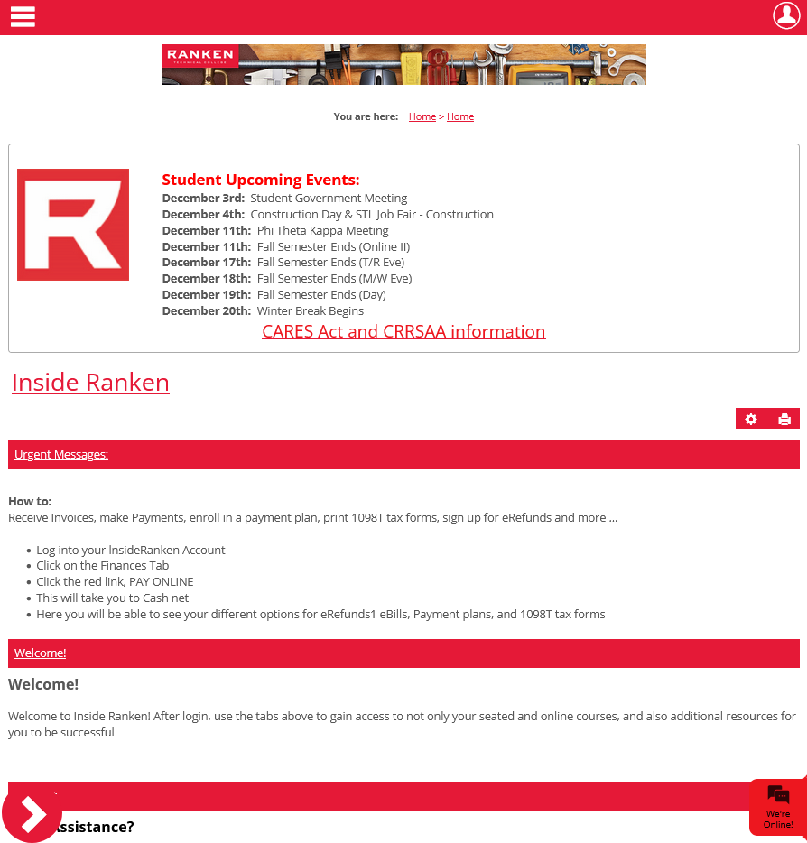
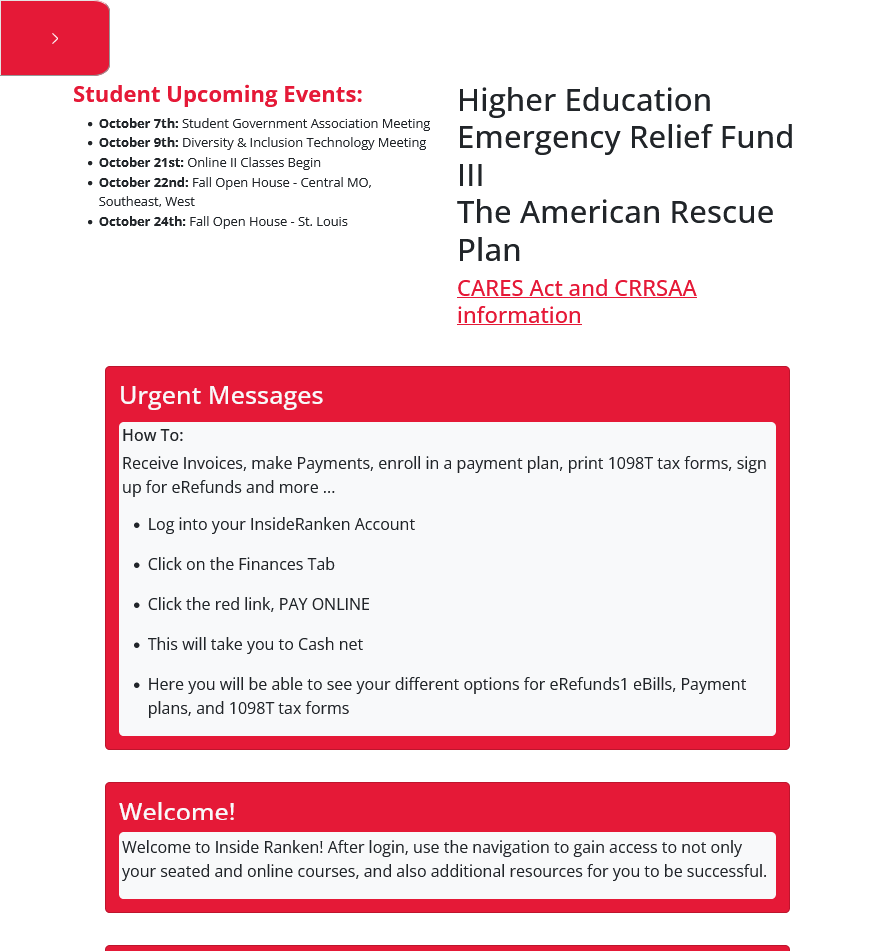

What I know: Where I'm at: Country: United States State: Missouri City: St. Louis Where I've studied: Ranken Technical College: Application and Web Development St. Louis Community College: General Major
During my Studies I found Ranken's official website to be cumbersome so I remade it Below Is the Official Website  Below Is the Remade Website 